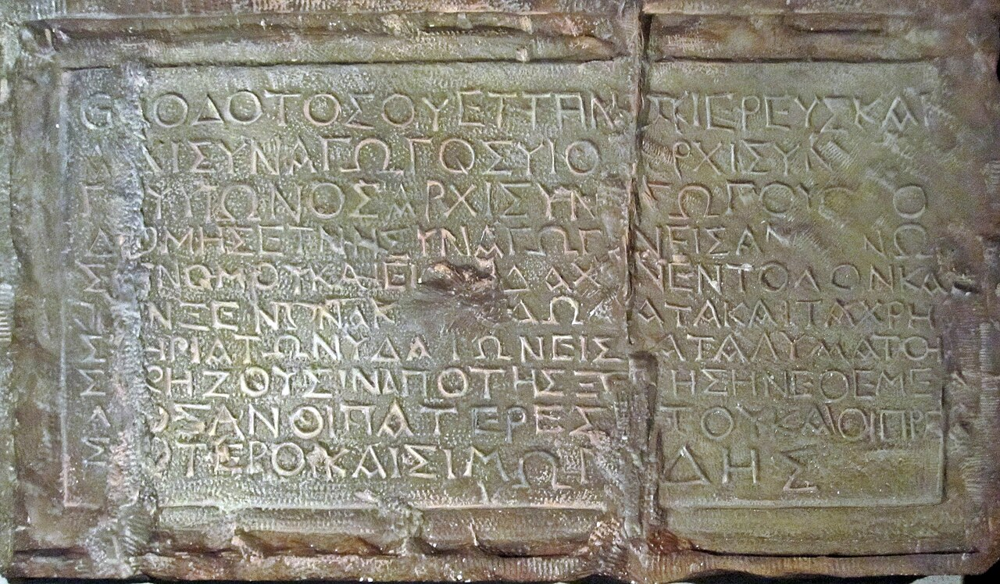

Theodotus Synagogue Inscription

A Greek synagogue dedication by 'Theodotus son of Vettenus, priest and ruler of the synagogue,' recording that his ancestors built the synagogue for reading the Law, teaching the commandments, and hosting travellers from abroad. It was found in a cistern in the City of David.
Biblical Significance
This is the earliest known synagogue inscription from Jerusalem, proving a Greek-speaking synagogue served pilgrims in the city before AD 70, much like the Synagogue of the Freedmen in Acts 6. It shows the world of synagogue teaching in which Jesus taught and Paul debated was vibrant in Jerusalem itself.
Interpretations
Scholars agree the inscription records a Jerusalem synagogue built by Theodotus before AD 70; it shows synagogues with guest rooms and water installations in Jesus’ day.